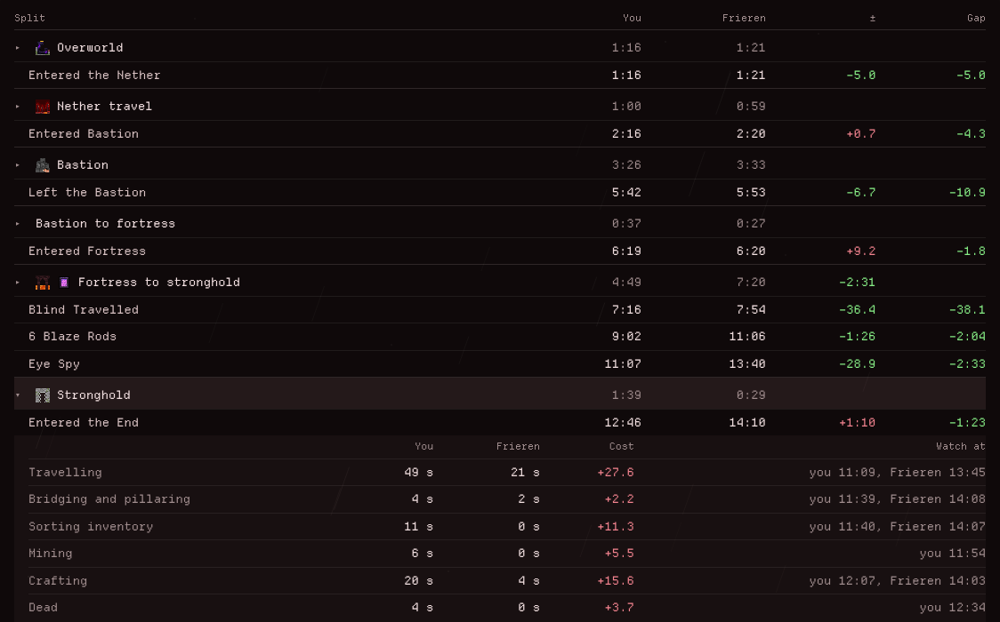
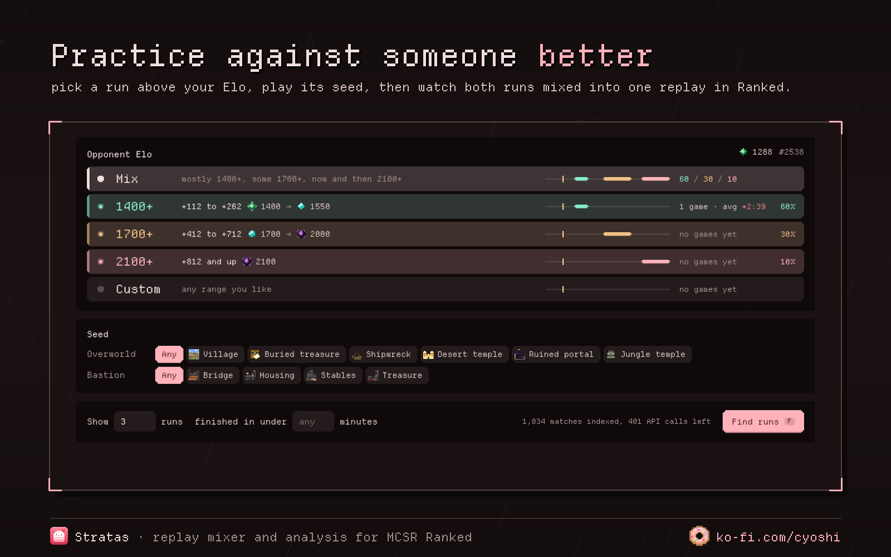
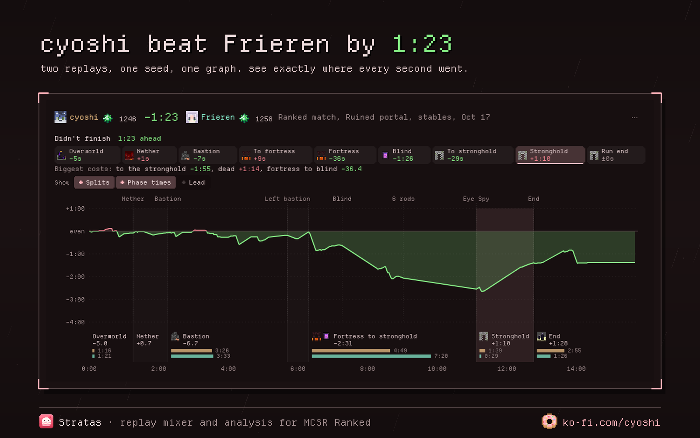
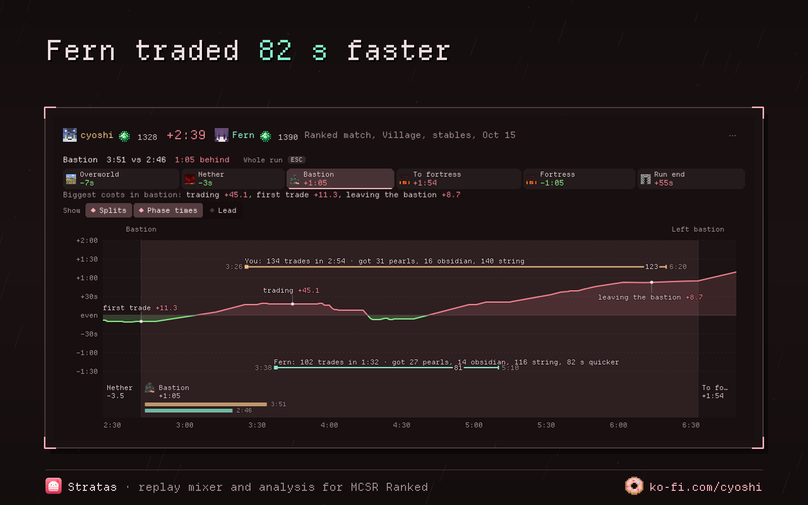
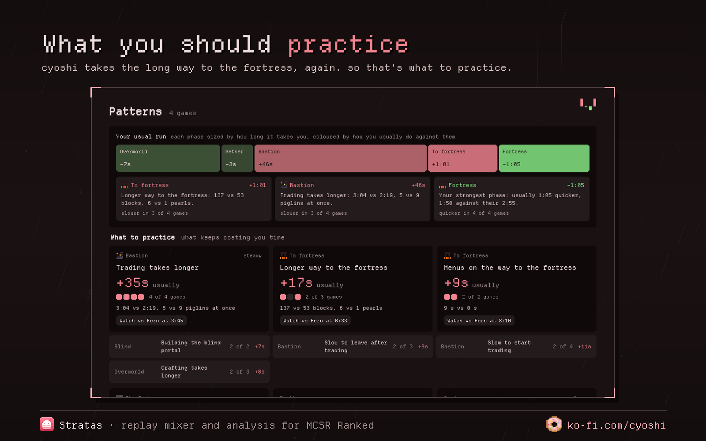

Practice against any Elo you want, on the same seed.
Play their seed in a private room and Stratas puts both runs in one Ranked replay. No VODs needed.
Free. Nothing gets uploaded, your replays stay on your computer.





Get it
The browser version can't see your Ranked folder, so you add replays yourself. The app does it all on its own.
Windows warns you first because it isn't signed yet: More info, then Run anyway. Signing is on the way through SignPath Foundation.